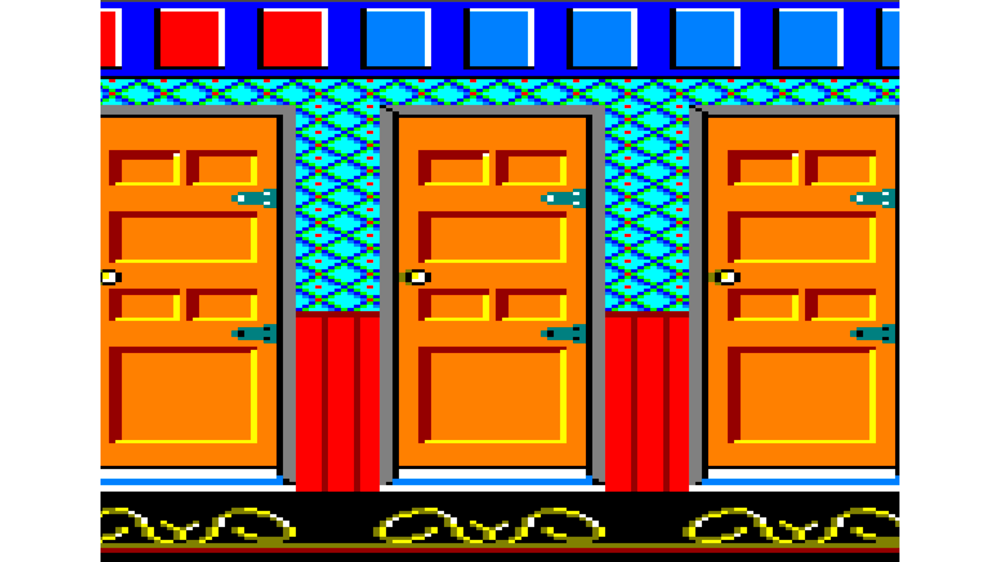
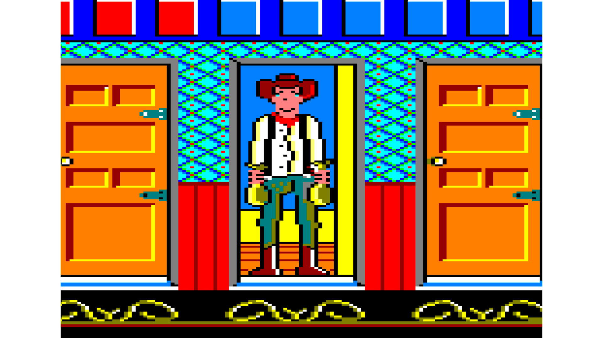

West Bank (clone)

Finally, we find the third and last practice on PS4. Like the previous ones, it is programmed in C++ and again also multiplatform (PS4, PC).
For this we go one step further and create a copy of the Banck Panic game, so in addition to the rendering of the previous practices as well as the logic, we have to add input from the PS4 controller.
Because these practices are developed on a PS4 development kit, and therefore have a confidentiality agreement behind them, it is not possible to give much more information about these PS4 projects.
Game Images




How to install?
As previously mentioned, due to the confidentiality agreement with SONY these PS4 projects are not available for download.